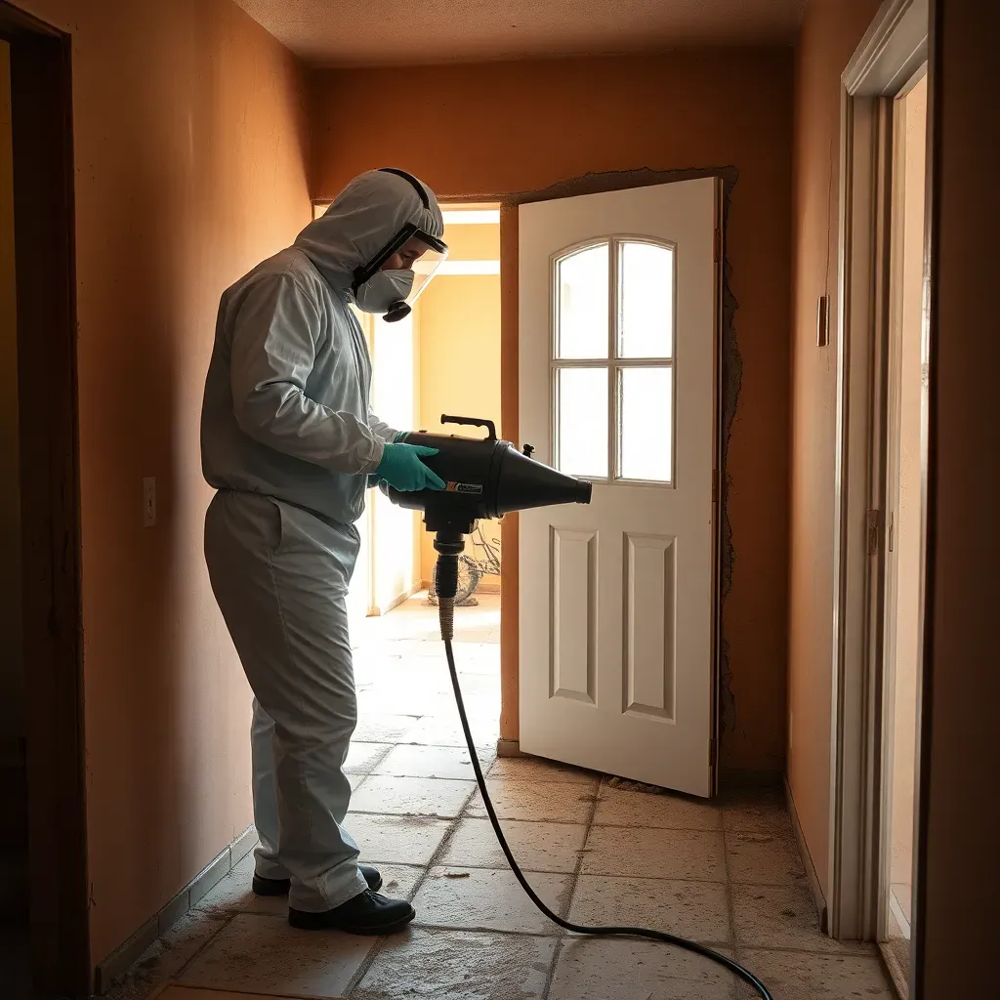

Pueblo is southern Colorado's second-largest city with a population of approximately 113,000, located about 40 miles south of Colorado Springs along I-25. Known historically as the "Steel City" for its role in Colorado's industrial growth, Pueblo is built along the Arkansas River and features the popular Riverwalk district and the historic Union Avenue commercial area. The city's housing stock reflects its industrial heritage, with many homes dating to the early and mid-1900s. These older properties often have unfinished basements with poured concrete or stone foundations that lack modern waterproofing. The Arkansas River and its tributaries raise the water table in low-lying Pueblo neighborhoods, and aging plumbing and irrigation infrastructure can introduce hidden moisture into walls and crawl spaces. Springs Mold Solutions serves all of Pueblo with certified, insured mold remediation designed to handle the moisture challenges of this riverside city's aging homes.

Our Mold Removal Process
- Free Mold Inspection — We inspect your Pueblo property to identify mold type, source, and extent.
- Containment — We seal affected areas with plastic sheeting and negative air pressure to prevent spread.
- Air Filtration — HEPA air scrubbers capture airborne mold spores throughout the remediation.
- Mold Removal & Cleaning — We remove contaminated materials and treat surfaces with antimicrobial agents.
- Moisture Control & Prevention — We address the moisture source and apply preventive treatments to stop recurrence.
Why Pueblo Homeowners Trust Springs Mold Solutions
- Older Home Expertise — We have extensive experience remediating mold in Pueblo's aging housing stock, including unfinished basements, stone foundations, and properties with outdated plumbing that creates hidden leaks.
- Riverside Moisture Knowledge — We understand how the Arkansas River and Pueblo's irrigation infrastructure affect groundwater levels and create mold-prone conditions in neighborhoods across the city.
- Licensed, Insured, and Certified — Our technicians carry current mold remediation certifications, full liability insurance, and follow strict containment and safety protocols on every Pueblo project.
- Daily Pueblo Service — Our crews travel to Pueblo daily. We offer same-day inspections and rapid emergency response for the entire city and Pueblo West.
Frequently Asked Questions — Mold Removal in Pueblo
Why do so many older Pueblo homes have mold problems?
Pueblo has a large stock of homes built in the early to mid-1900s during the city's steel industry boom. These older properties typically have stone or poured concrete foundations with no waterproofing membrane, minimal or no vapor barriers, and outdated plumbing that is prone to slow leaks. The Arkansas River runs through the city, and neighborhoods near the Riverwalk and Union Avenue historic district sit in areas with higher water tables. Aging sewer lines and irrigation ditches throughout Pueblo can also introduce moisture into basements and crawl spaces, creating persistent mold conditions.
Does Springs Mold Solutions serve all of Pueblo?
Yes. We serve the entire city of Pueblo and surrounding Pueblo County communities. Our service area includes the Riverwalk district, Union Avenue, Belmont, Aberdeen, Bessemer, Pueblo West, and all residential neighborhoods throughout the city. Pueblo is approximately 40 miles south of Colorado Springs on I-25, and our crews make the drive daily to serve Pueblo homeowners.
What does mold removal cost in Pueblo, CO?
Residential mold removal in Pueblo typically costs between $1,500 and $5,500 depending on the extent of the contamination, mold species, and how accessible the affected areas are. Older homes with basement mold or foundation issues may fall on the higher end. We provide free inspections and detailed written estimates before beginning any work, with no hidden fees or obligations.
Need Mold Removal in Pueblo? Call Now
We're your local mold removal experts serving Pueblo and all surrounding areas.
📞 Call (719) 496-8287